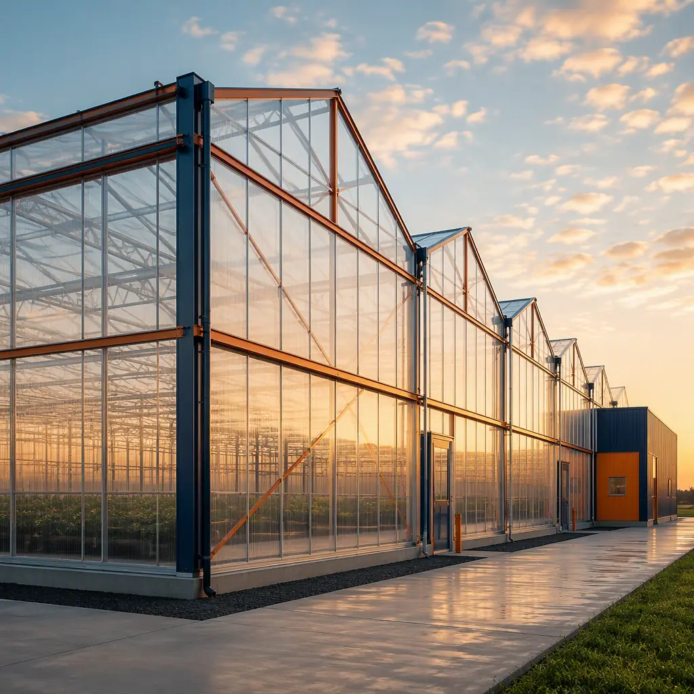
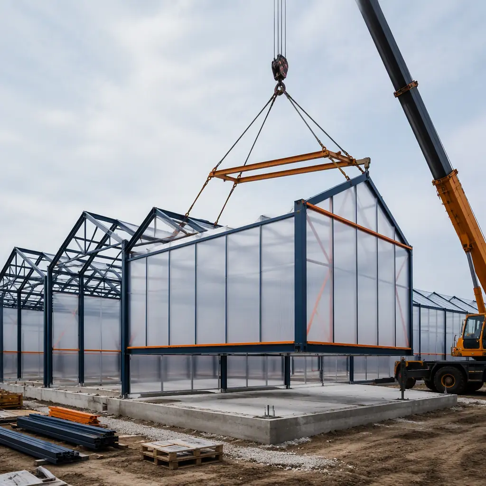
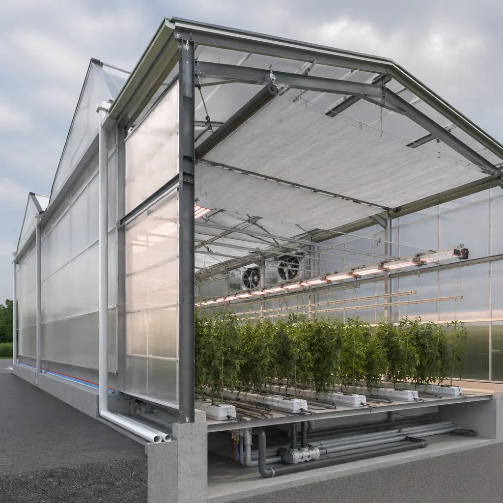

Fresh-produce demand is moving steadily toward year-round, locally grown supply, and the greenhouse industry is the fastest-growing response — North American controlled-environment agriculture capacity has grown 15–20% annually, with commercial greenhouses leading the expansion. But the buildings themselves have historically been delivered the slow way: a 5–10 acre greenhouse range is a site-built steel-and-glass project with an 8–14 month construction schedule, weather-dependent glazing, and a long tail of on-site HVAC, irrigation, and electrical integration. Modular prefabricated construction changes the delivery model — greenhouse structural bays, climate walls, and service buildings are fabricated as factory-assembled steel-frame modules with glazing and growing systems pre-installed, then set on the prepared pad in weeks. A commercial grower can go from approved financing to first planting in a single growing season. This guide covers the greenhouse typologies modular delivery serves, the climate and growing systems that must be engineered in, energy economics, and the cost and financing structure for commercial operations. For adjacent reading, see modular agricultural and food processing buildings and modular vertical farm and CEA facilities.

Why Greenhouse Demand Is Outpacing Supply
Three forces are pulling capital into greenhouse construction. First, food-security policy: federal and state programs now fund domestic produce infrastructure to reduce reliance on imports — the US imports roughly 60% of its fresh vegetables, and controlled-environment production is the policy-preferred answer. Second, retail economics: grocers are signing multi-year supply agreements with greenhouse growers who can guarantee year-round volume and quality, which rewards growers who can scale capacity quickly. Third, technology: modern greenhouses are precision-manufacturing facilities — climate, irrigation, lighting, and CO2 are controlled to fractions — and that equipment integrates cleanly into factory-built modules. The bottleneck is construction speed: conventional greenhouse ranges routinely overrun their schedules, and a grower who misses the fall planting window loses a full season of revenue. Modular delivery compresses the schedule by 40–60% using the same factory-parallelization documented in our modular construction scheduling guide.
Greenhouse Typologies Modular Delivery Serves
Modular construction is not limited to small structures — it scales to every commercial greenhouse format:
- Gutter-connected ranges. The workhorse of commercial produce — multiple bays joined at the gutter to form ranges of 1–20+ acres under one roof. Modular bay assemblies (steel columns, trusses, and glazing cassettes) are factory-fabricated and set in sequence, with the range growing bay by bay as capital and market demand allow.
- Hybrid glass and poly houses. Glass houses for high-value crops (tomatoes, peppers, cucumbers, ornamentals) and double-poly structures for cost-sensitive programs. The envelope system — glazing bars, gutters, ridge vents, and thermal screens — arrives factory-assembled rather than glazed in the field, eliminating weather as a schedule risk.
- High tunnels and protected cropping. Seasonal and low-cost structures for berries, cut flowers, and direct-market growers, delivered as modular kits that set in days on the same pad preparation as permanent ranges.
- Service and support buildings. Head houses (the plant that runs the greenhouse) — boiler rooms, irrigation and fertigation rooms, wash and pack lines, cold storage, and staff facilities — are conventional commercial modules, factory-built and connected to the range on the same crane schedule. The cold-chain side is covered in modular cold storage construction.

Climate & Growing Systems — Engineered In, Not Bolted On
A greenhouse is a mechanical system wrapped in a translucent envelope, and its profitability depends on how well the two are integrated. Modular construction moves that integration into the factory:
- Heating and ventilation. Boilers or heat pumps, hot-water piping, ridge and side vents, and horizontal airflow fans are installed and tested in the factory, with the piping runs and actuator wiring pre-positioned in the module structure — eliminating the field coordination that typically eats 2–3 months of a conventional schedule.
- Thermal screens and energy curtains. Retractable shade and energy screens are factory-installed in the truss zone, which is only possible with precise pre-assembly — the same logic as factory-integrated HVAC and indoor air quality systems in conventional buildings.
- Irrigation and fertigation. Drip lines, boom irrigation, and dosing systems arrive plumbed and pressure-tested; the head-house module contains the tanks, injectors, and controls, delivered as a tested skid — the process-equipment pattern shared with cold storage and other MEP-dense facilities.
- Lighting and controls. Supplemental LED lighting (for short-day production) and the climate computer that manages everything arrive pre-wired, with sensor looms factory-installed — so the entire greenhouse comes online as a calibrated system, not a collection of field-installed components.

Energy Economics & Net-Zero Greenhouses
Energy is the largest operating cost in a commercial greenhouse — typically 25–40% of production cost in cold climates — and the industry's margin leaders are the ones who engineer it down. Modular greenhouses support that discipline structurally: factory-installed thermal screens cut night heat loss by 40–50%; high-efficiency glazing systems reduce peak heating loads; and the envelope is built tight enough that the climate computer's energy model actually holds. For growers pursuing net-zero operations, the greenhouse roof and adjacent ground are ideal solar surfaces: modules are designed to accept rooftop PV with the structural capacity and wiring pre-provisioned, and battery storage and heat-pump systems integrate as service modules — the energy strategy detailed in modular net-zero energy buildings and modular energy efficiency. A 10-acre range with aggressive efficiency measures can cut energy cost per pound of produce by 30% or more versus a conventionally built equivalent.
Cost Structure — Modular vs. Conventional Greenhouse
| Cost Category | Conventional (5-acre range) | Modular (5-acre range) |
|---|---|---|
| Greenhouse structure & glazing | $18–28/sq ft | $16–25/sq ft (factory-built) |
| Climate, irrigation & control systems | $12–20/sq ft | $10–17/sq ft (pre-integrated) |
| Head house, cold storage & support | $0.8–1.4M | $0.6–1.1M |
| Construction schedule | 8–14 months | 4–7 months |
| Total 5-acre Range (approx. 218,000 sq ft) | $7.5–11.5M | $6.3–9.8M |
The 10–15% capital saving compounds with the schedule gain — a season of earlier production on a 5-acre tomato range is worth $500k–1M in gross revenue — and with the energy-efficiency advantage. Full benchmarking is in our 2026 modular cost guide.
Financing & USDA Support
Greenhouse capital is fundable through mainstream agricultural finance: USDA Farm Service Agency loans and loan guarantees, commercial ag lending, and increasingly through climate-focused capital. Modular delivery strengthens the financing case in concrete ways — a 4–7 month construction period reduces interest carry by roughly half, the factory-built structure carries a predictable, documented cost basis that lenders prefer, and the phased bay-by-bay model lets growers scale construction to cash flow. USDA programs that fund greenhouse infrastructure (including high-tunnel and protected-cropping cost-share programs) are well served by modular kits whose costs are documented up front. The capital structures and lender expectations are covered in our construction financing guide, and the lease-versus-own decision in our lease vs. buy guide.
Phasing, Expansion & Site Strategy
The modular greenhouse is a growth asset, not a fixed point. Growers typically start with 2–3 acres to prove agronomy and market, then expand bay by bay — each phase a repeatable module set that sets in weeks alongside operating production, with the climate systems extended rather than replaced. The same design package replicates across sites: a grower adding capacity in a second region deploys the identical range, cutting design cost per site by 50–70% and letting agronomy teams operate a known facility. Site requirements are modest — a level pad, water, and three-phase power — which opens up parcels (brownfields, reclaimed farmland, distribution-adjacent land) that conventional greenhouse construction struggles to serve. The expansion mechanics are covered in modular additions and expansions, and the multi-site replication model in our franchise rollout guide.
Is Modular Right for Your Growing Operation?
Modular delivery wins for growers with a hard market deadline (a retail supply agreement, a seasonal planting window, a grant spend-by date), for operations expanding in phases or across multiple sites, and for anyone whose business case depends on the energy performance of a factory-built envelope. For a small seasonal high tunnel, a kit structure may be all that's needed; for a commercial range — climate systems, head house, cold storage, and controls — modular construction converts an 8–14 month build into a single growing season, with the mechanical systems engineered in rather than bolted on. The same factory-built logic that serves agricultural and food processing facilities and controlled-environment agriculture applies to the greenhouses feeding the year-round produce market.